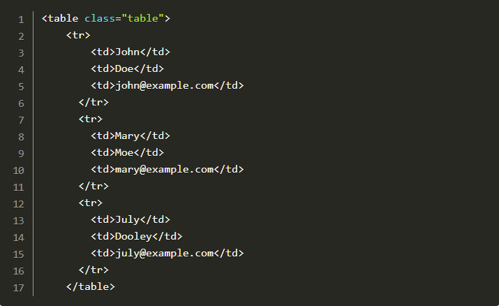

Use a display class to make the < h1 > element stand out more than typical headings (larger
font size and lighter font weight):
{kind=link}
Having the following table:
Add:
- a hover state on the table rows
- using contextual classes, make the first row green, the second row red and the last row blue.
{kind=link}
Create three Bootstrap buttons:
- a button with a white background and red border
- a small green disabled button
- a link acting as a large orange button, linking to https://google.com.
{kind=link}
Create a list group with three elements.
{kind=link}
Create a dropdown with four links. The fourth link should be separated from the separator. All links can link to the https://google.com page.
{kind=link}
Create a pills nav with two items linking to the https://google.com:
{kind=link}
Create a standard carousel containing the following two images:
{kind=link}
{kind=link}
{kind=link}
Create the grid with four cells. On a screen size higher than medium, show four columns. On a screen size higher than small, show two columns. Otherwise, show one column. Each cell should have a different colour.
{kind=link}
Create a button activating the following toast notification:

{kind=link}
Create the figure containing the betta image with thumbnails and caption on the bottom left. Make the figure resize with the change of screen size.
{kind=link}